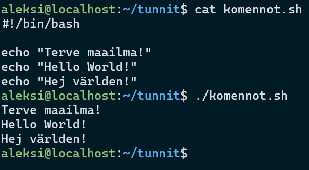
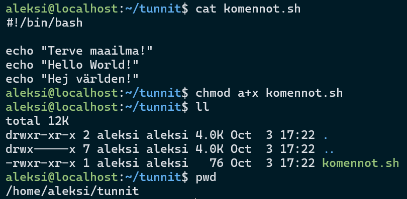
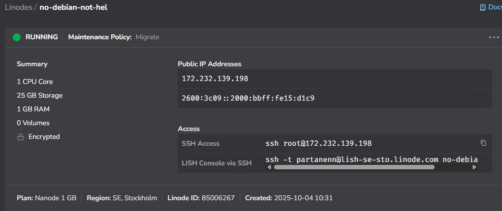
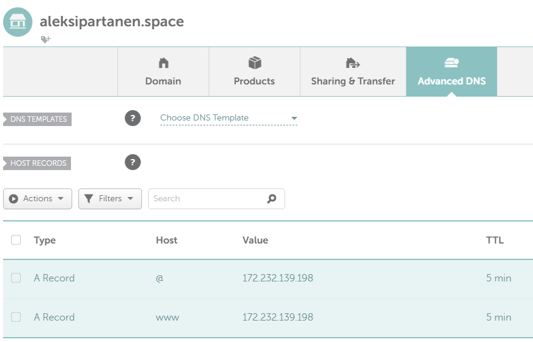
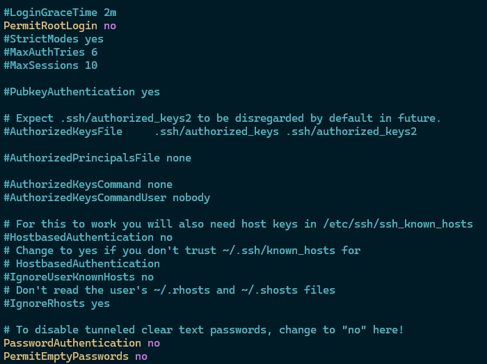
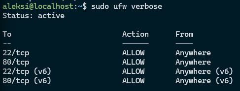
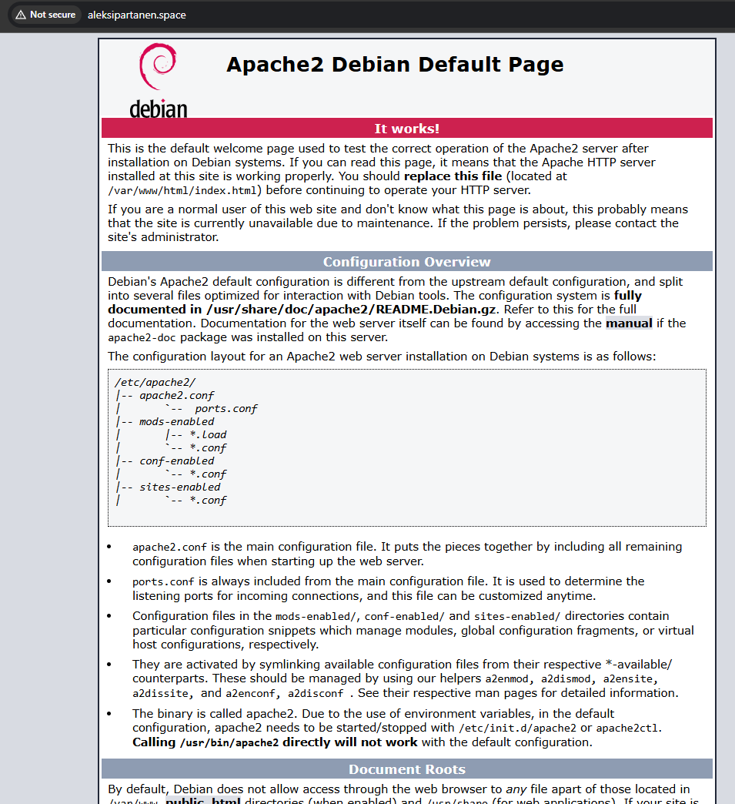

Lokaalin tietokoneen tiedot
GPU: Nvidia RTX 3070
CPU: AMD Ryzen 9 5900X 12-Core
RAM: 32GB
OS: Windows 11 23H2
Virtuaalipalvelimen tiedot
CPU: 1 Core
RAM: 1GB
OS: Debian 12
Harjoitus 7: Maalisuora
a) "Hei maailma" kolmella eri kielellä
Helppo ja yksinkertainen 3 echo komentoa.
b) Sources
I checked all sources and fixed missing once.
c) Uusi komento
Tein tiedoston komennot.sh ensimmäistä tehtävää varten, ja lisäsin sille suoritusoikeudet jokaiselle käyttäjälle.
d) Ratkaise vanha tehtävä
Päätin ratkaista tehtävän h4 vuoden 2022 linux palvelimet-kurssilta(Karvinen, 2022).
a) Pilvi
Vuokraan uuden pilvi palvelimen Linodelta. Vaihdan aiemmin kurssillani hommaamani domain nimen osoittamaan siihen. Luodessani uutta pilvipalvelinta, huomaan, että Linodella on nyt tarjolla Debian 13. Aiemmin ei ollut kuin Debian 12. Linoden nimeksi vaihdoin no-debian-not-hel. Asetan Root salasanan sekä otan aiemmin tallennetut SSH avaimet käyttöö sekä otan aiemmin tallennetut SSH avaimet käyttöön sekä otan aiemmin tallennetut SSH avaimet käyttöön. En muuttanut muita asetuksia.
 Pääsen sisään palvelimelle. f) Ensimmäisenä ajan sudo apt-get update kommennon, jotta kaikki paketit päivittyvät. Sitten teen uuden käyttäjän aleksi, jonka lisään myös sudo ja adm-käyttäjäryhmään. Käyn ottamassa pois salasana kirjautumisen (PasswordAuthentication no) /etc/ssh/sshd_config tiedostosta. Käynnistän myös ssh:n uudestaan komennolla sudo systemctl restart ssh, jotta uudet muutokset tulevat voimaan. Kopioin myös rootin .ssh kansiosta tiedoston known_hosts /home/aleksi/.ssh kansioon. Vaihdoin omistajuuden rootilta aleksille komennolla Kirjaudun sisään nyt uudella luodulla käyttäjällä. Sisäänkirjautuminen onnistuu SSH yhteydellä. Käyn vielä root käyttäjällä laittamassa root kirjautumisen pois päältä, uudelleen käynnistän ssh palvelun ja vaihdan aleksi käyttäjälle. Kokeilin vielä root kirjautumista, mutta se ei enää onnistunut.
d) Suuri muuri
Lataan palomuurin ufw paketin. Laitoin palomuuriin 22/tcp ja 80/tcp säännöt päälle.
e) Served
Asensin apache2 paketin. Testasin lokaalisti komennolla curl localhost, että apachen default sivu tulee näkyviin. Tulihan se. Sitten koitin muokata testisivua siten, että siellä näkyisi jotain muuta, mutta huomasin ja muistin että root käyttäjä on ainoa, jolla on oikeudet kyseisen tiedoston kirjoittamiseen. Noh, ainakin testisivu toimii.
- Karvinen, T. 2022. Linux Palvelimet. Tero Karvinen. Luettavissa: https://terokarvinen.com/2022/linux-palvelimet-ict4tn021-3020/#h4 Luettu: 4.10.2025.
- Karvinen, T. 2025. Linux Palvelimet. Tero Karvinen. Luettavissa: https://terokarvinen.com/linux-palvelimet/#h7-maalisuora. Luettu: 3.10.2025.